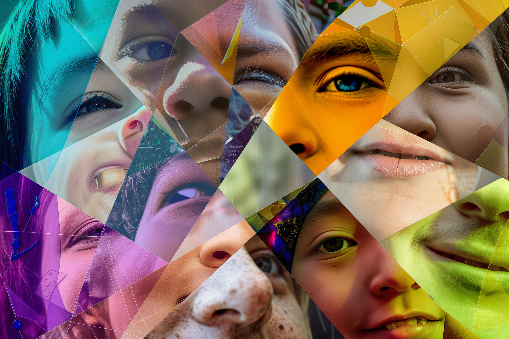
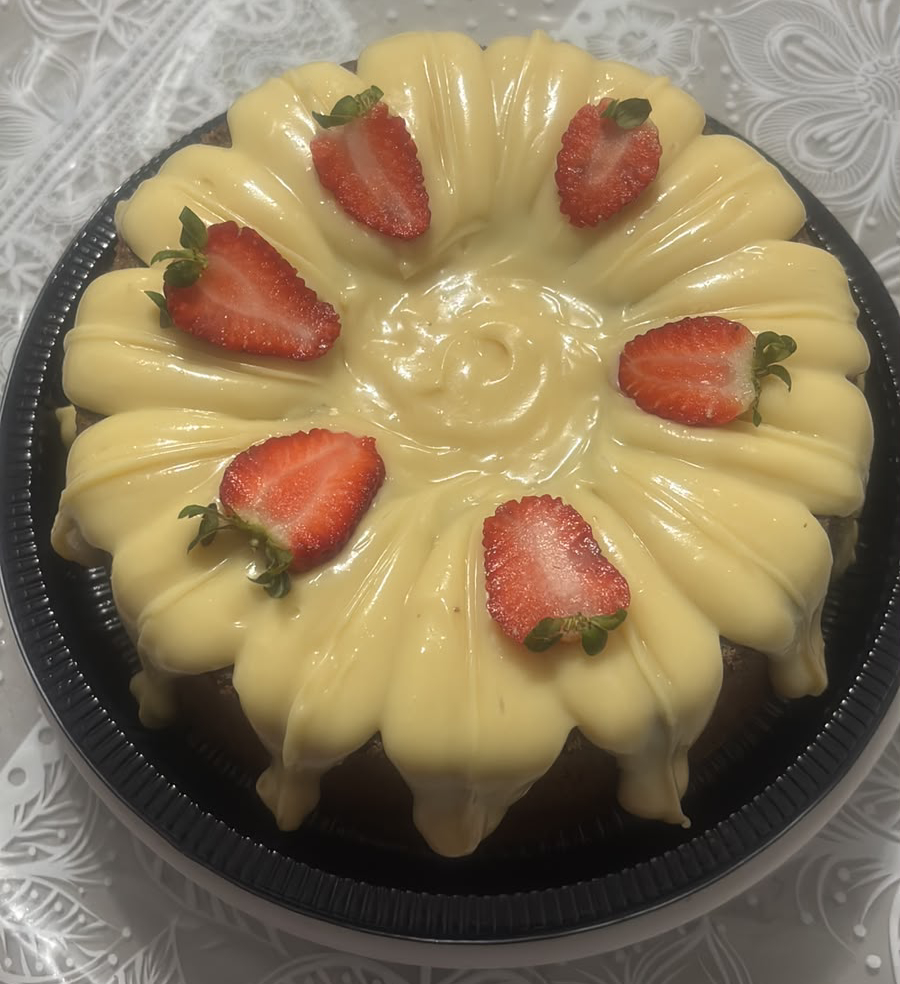
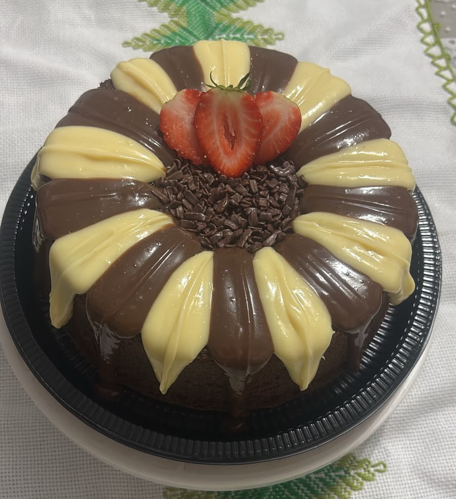
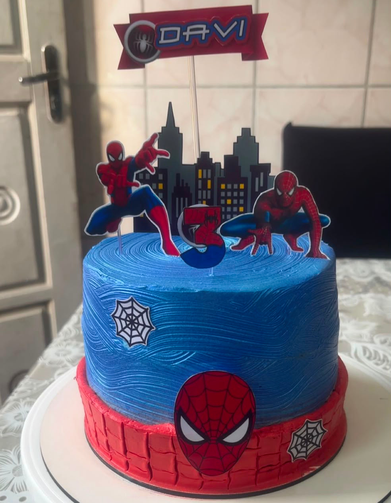
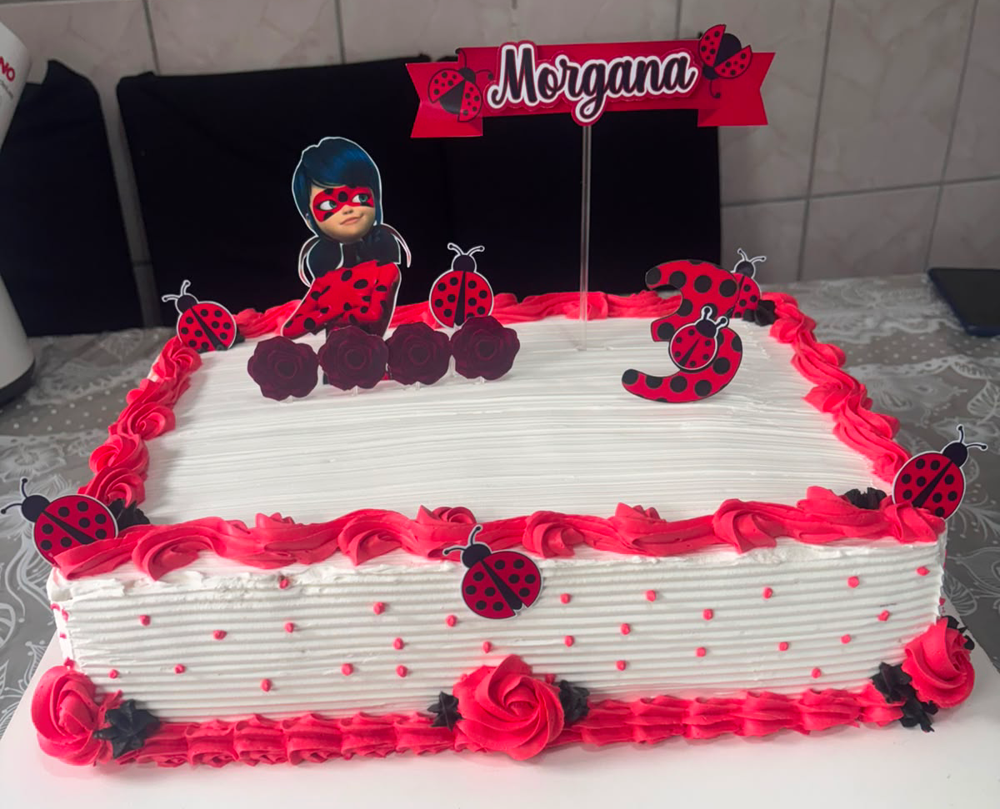
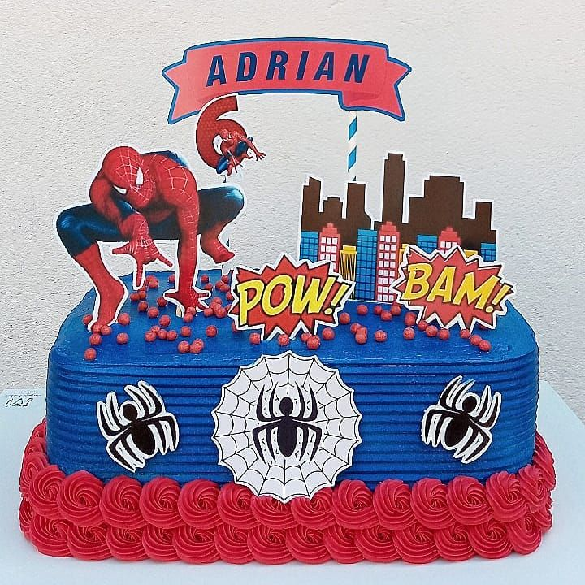
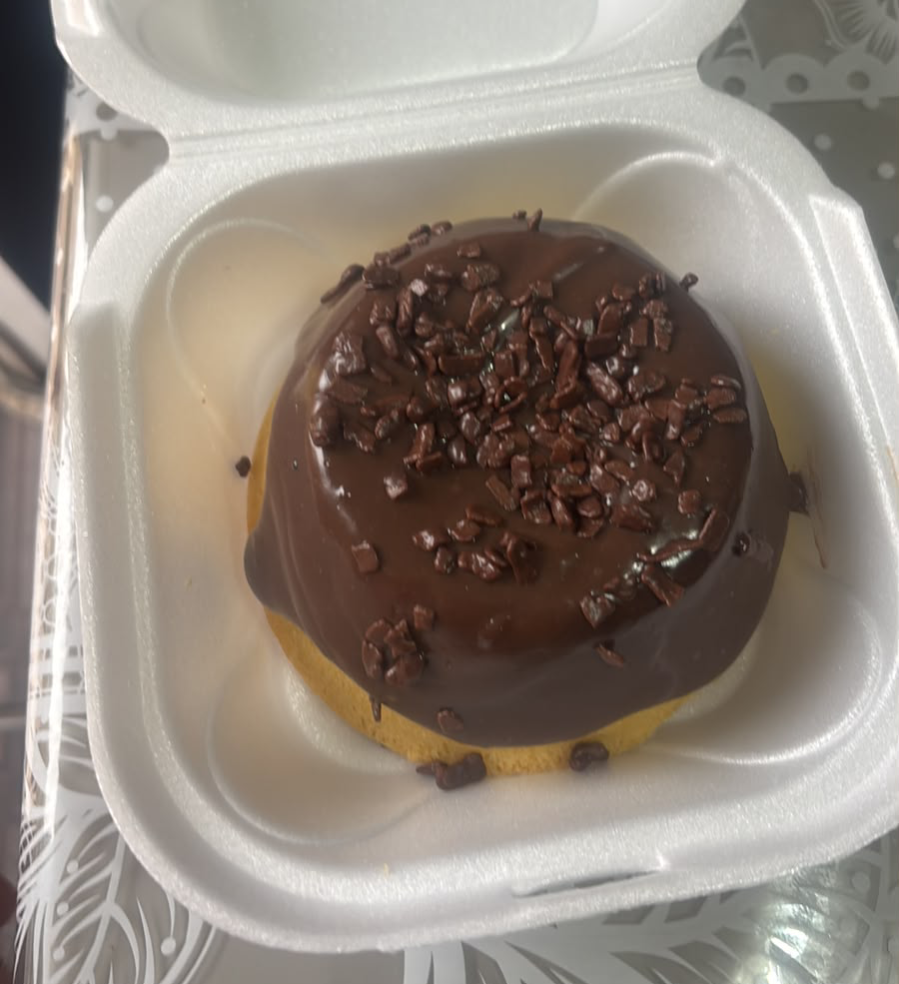
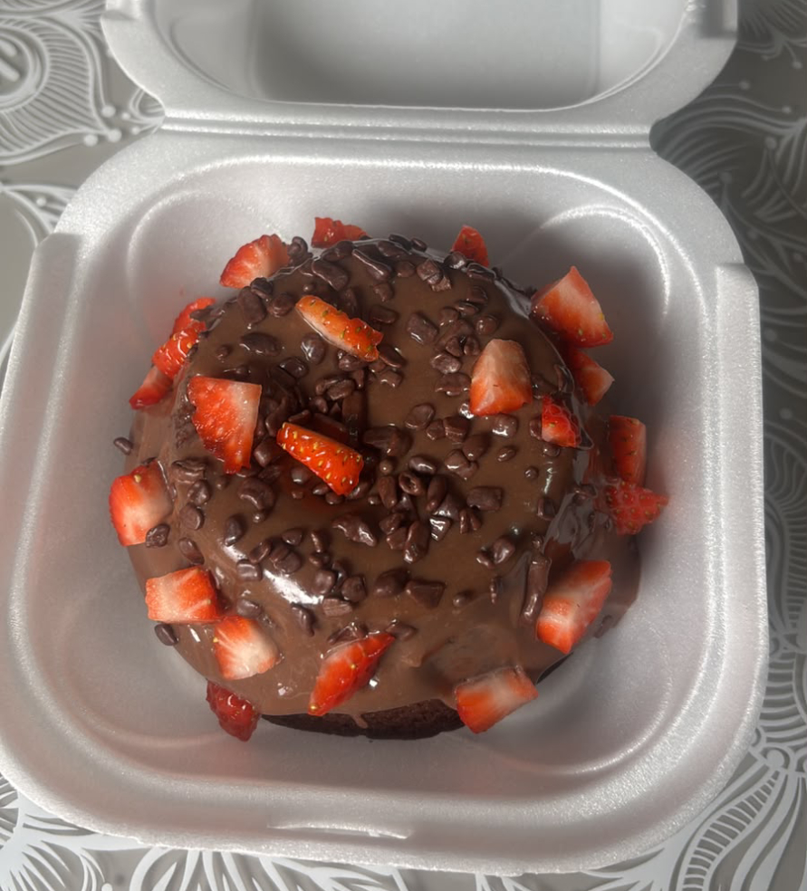
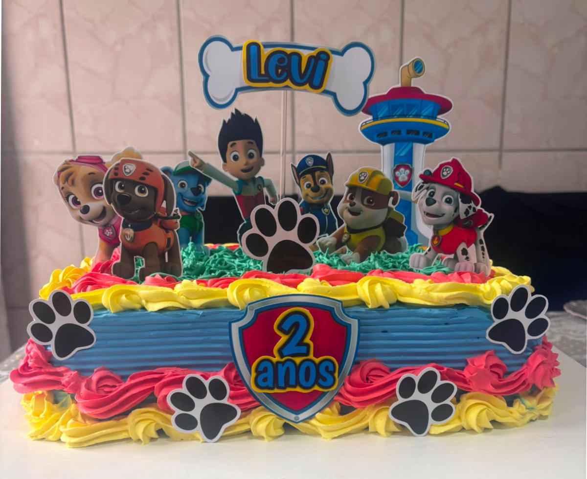

Somos uma empresa formada por quatro integrantes, que teve sua origem a partir de um projeto realizado pelo Senac. Durante o projeto, decidimos criar a FloreSer com o propósito de ajudar pessoas a otimizarem o seu tempo com a criação de sites. Ao longo do desenvolvimento desse projeto, percebemos o grande potencial que a FloreSer possuía e enxergamos a oportunidade de levar nossa proposta além do ambiente acadêmico. Foi então que decidimos transformar esse projeto em um sonho e, posteriormente, em uma realidade.

Oi! Eu sou a Ana, tenho 18 anos e atualmente curso Desenvolvimento de Software Multiplataforma (DSM) na FATEC. Faço parte do time de Front-end da FloreSer e fui responsável por dar o pontapé inicial no desenvolvimento da interface do nosso site e de outros projetos. Gosto de transformar ideias em interfaces bonitas, funcionais e, claro, com a nossa cara!

Olá! Eu sou a Gabrielly, tenho 18 anos e também curso Desenvolvimento de Software Multiplataforma (DSM) na FATEC, junto com a Ana. Faço parte do time de Front-end, trabalhando principalmente com CSS ao lado do Joabe. Juntos, cuidamos da estilização e personalização do site, sempre tentando trazer um pouco de criatividade e descontração para deixar a experiência mais leve e com a personalidade da FloreSer.

Prazer! Me chamo Joabe, tenho 18 anos e atualmente trabalho como Analista Jr. em TI. Faço parte do time de Front-end junto com a Ana e a Gabrielly. Na FloreSer, contribuo principalmente com a parte de estilização e personalização das nossas interfaces. Junto com a Gabrielly, trabalhei na customização do site utilizando CSS, buscando deixar tudo mais agradável, moderno e com a identidade da FloreSer.

Prazer! Eu sou o Luan Mendes Nascimento, tenho 18 anos e atualmente curso Desenvolvimento de Software Multiplataforma (DSM) na FATEC, onde estou no segundo semestre. Na FloreSer, faço parte do time de Back-end, sendo responsável por toda a lógica que acontece por trás do nosso site e dos nossos projetos. Utilizo JavaScript para transformar nossas ideias em funcionalidades e também fui responsável pelo desenvolvimento da lógica dos nossos demais projetos. Gosto de estar por trás dos “bastidores” e fazer tudo funcionar.
Missão
A missão da FloreSer é atuar nos bastidores para transformar ideias em sites funcionais, modernos e personalizados, atendendo desde pequenas até grandes empresas. Buscamos otimizar o tempo e valorizar cada etapa do projeto.

Visão
Temos como objetivo tornar a FloreSer uma referência no desenvolvimento e terceirização de sistemas e sites para empresas de todos os portes. Queremos crescer com inovação, criatividade e excelência em nossos projetos.
Valores
Acreditamos que honestidade, qualidade e comprometimento são essenciais para construir boas relações. Valorizamos a transparência e a responsabilidade para entregar resultados dos quais nossos clientes possam se orgulhar.
Serviços
Oferecemos soluções completas para transformar ideias em projetos digitais funcionais. Nossos serviços incluem planejamento, criação de layouts e desenvolvimento Front-end e Back-end para criar soluções de alta qualidade.

Projeto Jaquel Bolos
Desenvolvimento de uma plataforma web focada em otimizar as vendas e a experiência de compra dos clientes da Jaquel Bolos.
- Carrinho Interativo e Dinâmico: Permite selecionar produtos, ajustar quantidades e ver o cálculo do valor total do pedido em tempo real.
- Envio de Pedido Formatado: Sistema inteligente em JavaScript que organiza os itens escolhidos, os dados de entrega e as observações em uma mensagem clara e pronta para enviar ao WhatsApp da Jaque.
- Boas Práticas: Desenvolvido com HTML, CSS e JavaScript, mantendo o código limpo, responsivo e versionado via Git/GitHub.







